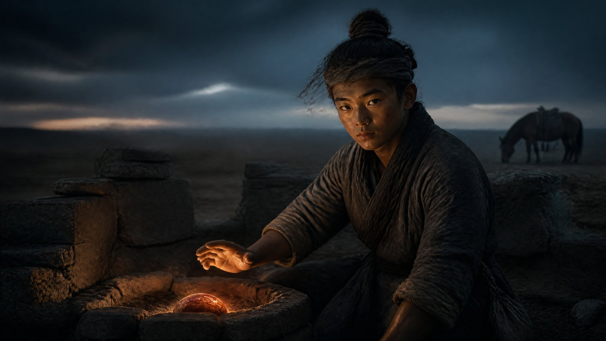

焚天燎日

阿察儿旧帐在草原深处。没有路标，没有界碑，只有一圈被风沙磨了几十年的残石。石圈中间是一口塌了半边的老灶——灶膛里没有灰，只有一小块嵌在灶膛正中央的暗红色石头。石头表面不平，隐隐能看见火焰状的风蚀纹路，摸上去还是热的。炉心石。
赤老温蹲在残石圈外，把他祖父画的那张羊皮地图放在膝上对照了一遍。他指着石圈外围一片塌到只露出半截桩子的毡帐遗址说，阿察儿那一辈人随铁木真大汗西征之前就是在这座帐前最后一次和直脱儿围着同一口锅分食的。“直脱儿公南征之前把赤家一半火种封进了这块石——这一半留在草原，我爷爷的爷爷守了三代。”
火焱从背上取下黑弓，放在老灶旁。他把那三支从扬州漕河带回来的旧箭头取出来，一支一支插进残石圈的泥土里，箭头朝向老灶——七十年前在南边河滩上被捡起来的箭，今天回到了北边。然后他蹲下身，双手按在那块炉心石上。丹田七色火齐涌——赤红，橘黄，白金，橙金，赤金，青白，透明。七色火上那块暗红色的石头，老灶塌了的灶膛“呼”地一声重新燃了起来。不是一种颜色——是所有颜色搅在一起，搅成一团从未见过的东西：不是赤红不是橘黄不是白金不是橙金不是赤金不是青白不是透明，是灰——一种烧尽了七色之后剩下最干净的灰。然后灰又烧成了火。
混沌火。八转的入口。万物之始，聚散无形。焚天在这一转中烧到了极致——不是火烧连营，不是海煮火墙，是草原的天自己烧了起来。残石圈上空极低的云层被混沌火映出一层淡淡的灰金色——不是日出的颜色，是日全蚀时最外圈那层薄薄的光晕。焚天，燎日。
系统之声在他耳边升起：【传承碎片六·达成（6/7）】所得——阿察儿炉心石，草原火种之源。【赤火九转·第八转·混沌火·初现】焚天之后，万物归烬——烬中混沌，聚合无形。
草原尽头，几匹马不紧不慢地踱过来——不是大军，只有三个骑手。当先那人没穿铠甲，只披着一件旧蒙古袍，腰间别着一把没有出鞘的弯刀。他跳下马，走到老灶前，对着赤老温用蒙语行了一个简短的拱手礼。他带来的是扩廓帖木儿的口信——北元朝廷无意于南征。“王爷说的不是臣服也不是结盟。火家已在朱家那边归了灶，我等虽不能许漠南王金印，但从今日起赤氏旧帐方圆百里草场，凡火氏后人——来去自由。”
火焱把黑弓从阿察儿旧灶旁拿起来，弓臂上那层乌沉沉的包浆在混沌火的映照下泛出温润的光。他把赤老温那根半焦的柴放进赤伯升给的行灶里，用阿察儿老灶里新燃的混沌火点着了第一缕北边的炊烟。赤老温在残石圈外新砌了一口江南灶——灶膛宽二指半，灰道往南偏东。一口朝南往北的，一口朝北往南的。两口灶中间嵌着炉心石，石面上那团灰金色的混沌火同时朝南北两个方向烧着——从此赤家不再是南下的弓和北守的柴，是同一口灶里同一块石烧出来的同一团火。
回百曲的时候他把炉心石放在直脱儿的封坛旧砖旁边。灶台砖下从十五样变成了十七样——最中间的不是弓不是印不是图，是阿察儿的炉心石和直脱儿的封坛砖，两块烧了几十年不曾灭过的石头靠在一起，石缝里不断往外吐着极淡的混沌灰光。赤伯升端了两碗赤豆饭走过来，他没问草原多远——他只说炉膛的火他看了一辈子，最后能烧成一半草原一半江海的光影，老把式这辈子值了。
海妹把新一季的火锻旗船牌钉上大桅时，赤老温那口向南偏东的灶头正好从巷口冒出了青白色的第一缕烟。百曲人世世代代顺风闻到的是海盐焦味，现在北风里多了一点点苦——是草原上野马粪烧过之后留在砖缝深处的旧日尘埃，像每个归家的人鞋底都会带回来的泥土的味道。
· 第四卷《焚天》 ·